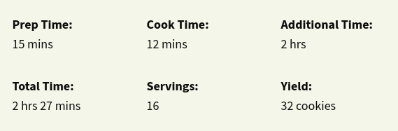
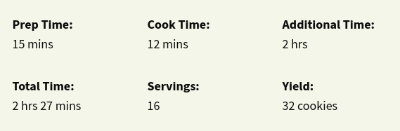

Chef John's Chocolate Chip Cookies
Crispy around the edges, chewy and chocolaty in the middle, and thin, oh so thin. My 'secret' formula has been adapted from Alton Brown's famous, 'The Thin' recipe, and is fairly foolproof. The only real variable is the baking time, since we all scoop slightly different amounts. And yes, of course you can add nuts to yours!
:max_bytes(150000):strip_icc():format(webp)/2453255_Chef-Johns-Chocolate-Chip-Cookies-1x1-1-408db7596cd54de59e7aed1f1504f71c.jpg) 

Ingredients
- 2 ¼ cups all-purpose flour
- 1 ¼ teaspoons kosher salt
- 1 teaspoon baking soda
- 1 cup unsalted butter, very soft
- 1 cup white sugar
- ½ cup light brown sugar
- 1 large egg
- 2 tablespoons milk
- 1 ¼ teaspoons vanilla extract
- 2 cups semisweet chocolate chips
Directions
- Whisk flour, salt, and baking soda together in a bowl. In a separate bowl, cream the butter, white sugar, and brown sugar together until mixture is light and fluffy, 3 to 4 minutes. Add the egg, milk, and vanilla extract. Whisk liquids together in small areas around the bowl, then all together to avoid separation.
- Pour dry ingredients into the wet ingredients; stir until flour is thoroughly mixed in. Stir in the chocolate chips.
- Transfer dough to a resealable plastic bag. Refrigerate until dough is firm, at least 2 hours.
- Preheat oven to 375 degrees F (190 degrees C). Line baking sheet with parchment paper.
- Scoop out rounded tablespoons of dough and place on prepared baking sheet, leaving 4 inches of space between cookies (about 8 per sheet). Bake in preheated oven until cookies are golden brown, about 12 minutes. Slide parchment and cookies onto a cooling rack for a few minutes. Remove parchment and finish cooling the cookies on the rack.
Cook's Note:
If you don't have kosher salt, use 3/4 teaspoon of fine table salt instead of 1 1/4 teaspoons kosher.
Get Another Recipes :